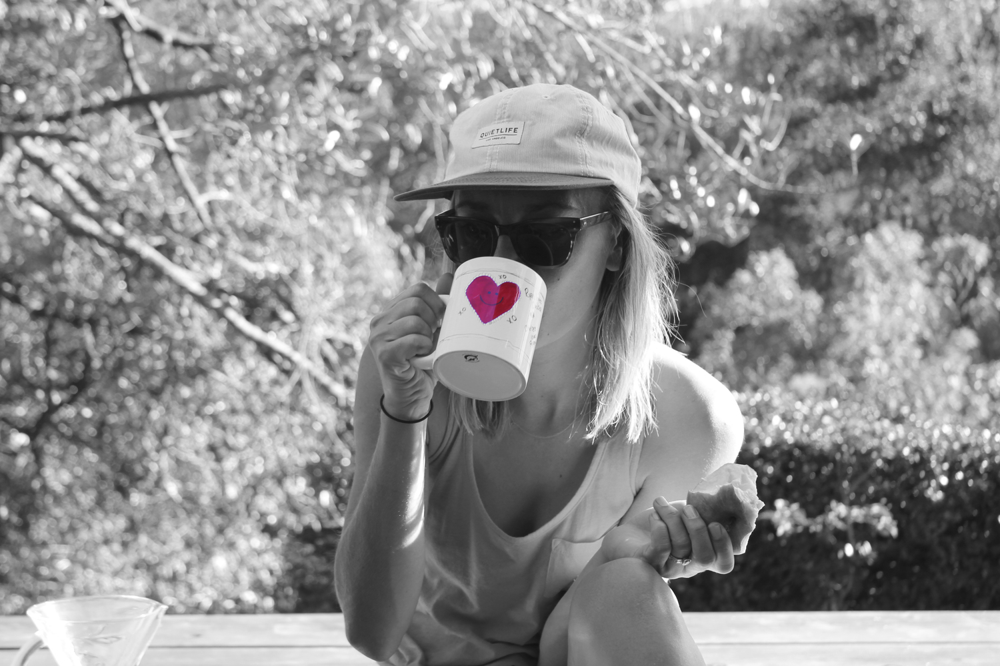

El placer del café

Una taza de café puede acompañar una conversación, un libro o un momento de descanso. En Sabrina Coffees queremos compartir esos pequeños momentos contigo.

Una taza de café puede acompañar una conversación, un libro o un momento de descanso. En Sabrina Coffees queremos compartir esos pequeños momentos contigo.